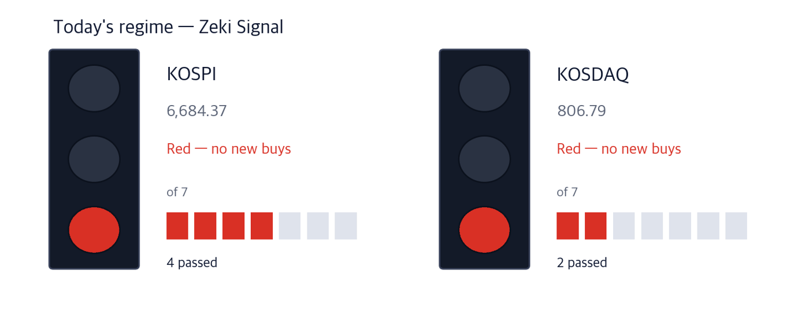
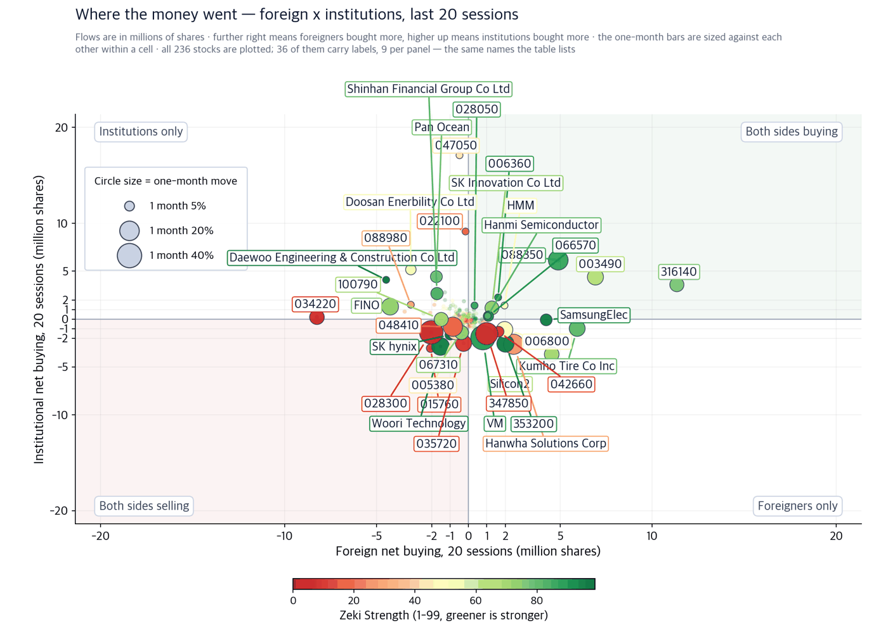
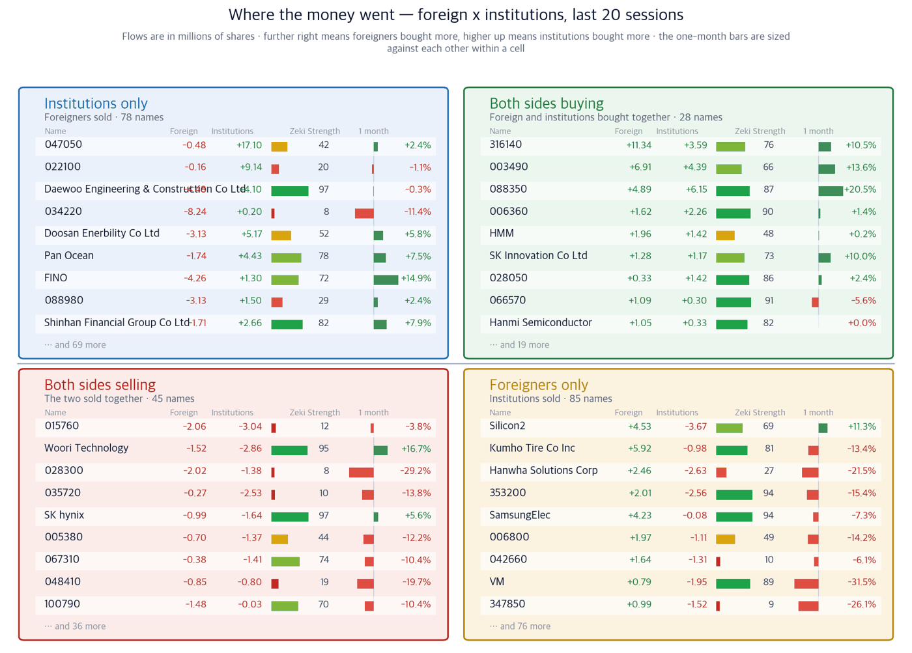

KOSPI 6,684.37 (-3.26%) | KOSDAQ 806.79 (-1.69%) | Zeki Signal Red | Nasdaq 26,202.20 (-0.50%) | USD/KRW 1,347.5 |

| Lit lamp | Today's regime. Green means buyers have the edge, yellow means wait, red means no new buys. |
| Filled squares | How many of the 7 conditions passed. More filled means firmer market structure. |
| All filled but not green | Something else pulled the grade down one step. The reason is printed under the lamp. |
The Zeki Signal reduces seven market conditions to a single lamp. Green means buyers have the edge, yellow means wait, and red means we hold off on new buying. On 14 September the KOSPI passed four of the seven and the KOSDAQ passed two, so both are red.
New York fell overnight. The Nasdaq lost 0.50% on 14 September to close at 26,202.20, and the S&P 500 fell 0.45%. Nvidia and Micron came under pressure after artificial-intelligence leaders called for slowing development. Seoul opens after New York closes, so this is where the pressure on semiconductors comes from this morning. (Investor's Business Daily)
1. The index fell, but the market did not fall as one. The KOSPI lost 3.26% on 14 September. Even so, 78 of the 351 names we track closed higher — about one in five. As the US 10-year yield rose to 4.96%, foreign investors sold semiconductors, and that money moved into other sectors rather than out of the market.
2. Cosmetics met more of our conditions than anything else. Kolmar Korea met all four. On the day AmorePacific set out dermatological cosmetics and hair care as its new growth pillars, both the prices and the flows of these companies moved together.
3. The biggest story was not the best stock. Korean defence breaking into the US market led the paper, and Hanwha Aerospace rose +4.81%. It met none of the four conditions. When that happens we do not put the name forward, and we say below why we set it aside.
This is a week that sets rates. The dates below are the schedule as reported by the Korea Economic Daily on 11 September.
| Date | What happens | What it means for us |
|---|---|---|
| 15–16 September (local time) | The September meeting of the US Federal Open Market Committee | A further rise takes the US 10-year above 5%. That yield is why foreign investors sold semiconductors on 14 September |
| Early 17 September (Korea time) | The FOMC rate decision is published | It lands before Seoul opens, so it goes straight into the 17 September open |
| 14–18 September | The week containing US quadruple witching | Index moves around the expiry can detach from real supply and demand |
All are as of 14 September.
| What to watch | Level now | What happens if it moves |
|---|---|---|
| US 10-year Treasury yield | 4.96% | Above 5% foreign investors sell more semiconductors. They were already net sellers on 14 September |
| West Texas Intermediate crude | $101.71 | Higher crude raises costs for airlines and chemicals, while shipping gains as freight rates rise |
| USD/KRW | 1,347.5 | A weaker won helps exporters but tends to add to foreign selling |
The Bank of Japan also holds its policy meeting this week. Two central banks setting rates in the same week is unusual, and rates are what is pressing on Korean equities now.
We ask four questions of the 351 names we track. Did the price rise over the month? Is Zeki Strength above 90? Did foreign investors buy net over 20 sessions? Did institutions? Zeki Strength is our own 1-to-99 rank of every name against the rest, so 90 means the top 10%.
AmorePacific put numbers on its next ten years. When a brand owner raises its growth plan, the companies that manufacture for it receive the volume first. So we looked at the brand and the manufacturer together.
Close 145,800 KRW | Day +3.18% | 1 month +7.84% | 3 months +66.06% | Zeki Strength 95 | Off 52wk high -9.83% |
| Who | Kolmar Korea, a contract manufacturer of cosmetics. |
| What | It rose +3.18% on 14 September to close at 145,800 KRW, on a day the KOSPI fell. |
| When | AmorePacific's investor briefing was held on 11 September and reported on 14 September. (Korea Economic Daily) |
| Where | At the AmorePacific head office in Yongsan, Seoul, before domestic and overseas institutional investors and analysts. |
| Why | AmorePacific said it aims for annual revenue of 1 trillion KRW each from dermatological cosmetics and hair care by 2030. When a brand raises volume, the manufacturer receives it first. |
| How | Kolmar Korea met all four of our conditions — Zeki Strength 95, +66.06% over three months, and net buying by both foreign investors and institutions over 20 sessions. |
Close 144,400 KRW | Day +2.78% | 1 month +7.36% | 3 months +35.84% | Zeki Strength 74 | Off 52wk high -12.54% |
This is the company that set the target. It rose +2.78% on 14 September and is +35.84% over three months. Foreign investors and institutions both bought net over 20 sessions. Zeki Strength is 74, short of 90, so it met three of the four. The revenue goal for fiscal 2027 is about 5 trillion KRW against 4.492 trillion the year before — a rise of 10%. (Korea Economic Daily)
The container freight index compiled by the Shanghai Shipping Exchange reached 3,662.18 last week, its highest in two years, up 72.18 points on the week. (Korea Economic Daily) When freight rates rise, the revenue of a company that owns ships rises with them.
Close 6,050 KRW | Day +0.33% | 1 month +7.46% | 3 months +17.93% | Zeki Strength 78 | Off 52wk high -5.17% |
| Who | Pan Ocean, a dry-bulk shipping operator. |
| What | It rose +0.33% on 14 September and is +17.93% over three months. |
| When | The freight index reached its two-year high last week. |
| Where | Compiled and published by the Shanghai Shipping Exchange. |
| Why | Tension around the Red Sea and Hormuz sends ships the long way round, which takes capacity out of the market and lifts rates. The third quarter is also the traditional peak season. |
| How | The price followed but the flows split. Institutions bought 4.43m shares net over 20 sessions while foreign investors sold 1.74m shares net. |
Close 21,100 KRW | Day +1.20% | 1 month +0.24% | 3 months +3.18% | Zeki Strength 48 | Off 52wk high -13.88% |
HMM runs container ships, so the freight index reaches this company directly. It rose +1.20% on 14 September. Unlike Pan Ocean, both sides bought — foreign investors +1.96m shares and institutions +1.42m shares. Over the month it is +0.24%, and Zeki Strength of 48 falls short of 90, so it met three of the four.
Terafab, the chip plant Elon Musk is building in Austin, Texas, has begun buying Korean equipment. Hanmi Semiconductor received a purchase order for packaging equipment for AI system chips. It is the first time a Korean back-end equipment maker has taken an order from this plant. (Korea Economic Daily)
Close 226,000 KRW | Day -2.16% | 1 month +0.00% | 3 months -28.37% | Zeki Strength 82 | Off 52wk high -44.81% |
| Who | Hanmi Semiconductor, a maker of chip packaging equipment. |
| What | It received a purchase order from Terafab for packaging equipment for AI system chips. |
| When | Reported on 14 September, citing the semiconductor industry. |
| Where | Terafab is the plant under construction in Austin, Texas. |
| Why | Musk is building his own AI chips for SpaceX, Tesla and xAI. On the front end, HPSP had already taken an order from the same plant. |
| How | Hanmi is building an eighth plant in Juan, Incheon, for volume production in the second quarter of 2027, and plans a US subsidiary in San Jose, California, later this year. |
The price has not followed yet. It fell 2.16% on 14 September and sits 44.81% below its 52-week high. Over the month it is exactly unchanged — it closed at 226,000 KRW on 13 August as well. Foreign investors and institutions both bought over 20 sessions, so it met two of the four.
Close 7,460 KRW | Day +5.97% | 1 month +19.74% | 3 months +3.61% | Zeki Strength 85 | Off 52wk high -32.24% |
SFA Semicon assembles and tests chips. Hanmi sells the equipment; SFA Semicon runs the process. It rose +5.97% on 14 September, the largest gain among the names we track that day, and is +19.74% over the month. Institutions bought 2.79m shares net over 20 sessions while foreign investors sold 1.28m shares net.
A big story does not make a stock. Both themes below led the paper, but our numbers did not follow, so we are not putting them forward today.
| Theme set aside | What the paper said | What our numbers said |
|---|---|---|
| Korean defence entering the US | Hanwha Aerospace exported the K9 self-propelled howitzer to the United States, with follow-on volume estimated at 10 trillion KRW. (Korea Economic Daily) | Hanwha Aerospace (012450) rose +4.81% on 14 September but met none of the four. It is -4.39% over the month, Zeki Strength 61, with both foreign investors and institutions net sellers. LIG Defense & Aerospace (079550) is -16.49% over the month. |
| AI as a driver of cybersecurity | Nvidia chief executive Jensen Huang named cybersecurity as the next market for artificial intelligence at a Goldman Sachs technology conference in San Francisco on 10 September. (Korea Economic Daily) | AhnLab (053800) rose +3.37% on 14 September but Zeki Strength is only 52, and both foreign investors and institutions were net sellers over 20 sessions. Most of the security names that jumped are small caps we do not measure. |
| Name | Theme | Zeki Strength | 14 Sep | Met | Weight of evidence |
|---|---|---|---|---|---|
| Kolmar Korea (161890) | Cosmetics | 95 | +3.18% | 4/4 | Well grounded |
| AmorePacific (090430) | Cosmetics | 74 | +2.78% | 3/4 | Grounded |
| Pan Ocean (028670) | Shipping | 78 | +0.33% | 2/4 | Needs checking |
| HMM (011200) | Shipping | 48 | +1.20% | 3/4 | Grounded |
| Hanmi Semiconductor (042700) | Back-end semis | 82 | -2.16% | 2/4 | Needs checking |
| SFA Semicon (036540) | Back-end semis | 85 | +5.97% | 2/4 | Needs checking |
| Hanwha Aerospace (012450) | Defence (set aside) | 61 | +4.81% | 0/4 | No basis |
| LIG Defense & Aerospace (079550) | Defence (set aside) | 69 | +3.10% | 1/4 | Needs checking |
| AhnLab (053800) | Security (set aside) | 52 | +3.37% | 1/4 | Needs checking |
The verdict is set by the number of O, not chosen by us. Four means well grounded, three grounded, two or fewer needs checking. All four columns are shown so you can check our arithmetic yourself.
| Name | ①up over the month | ②Strength 90+ | ③foreign net buy | ④institutional net buy | Met | Weight of evidence |
|---|---|---|---|---|---|---|
| Kolmar Korea (161890) | O | O | O | O | 4/4 | Well grounded |
| AmorePacific (090430) | O | X | O | O | 3/4 | Grounded |
| Pan Ocean (028670) | O | X | X | O | 2/4 | Needs checking |
| HMM (011200) | O | X | O | O | 3/4 | Grounded |
| Hanmi Semiconductor (042700) | X | X | O | O | 2/4 | Needs checking |
| SFA Semicon (036540) | O | X | X | O | 2/4 | Needs checking |
| Hanwha Aerospace (012450) | X | X | X | X | 0/4 | No basis |
| LIG Defense & Aerospace (079550) | X | X | O | X | 1/4 | Needs checking |
| AhnLab (053800) | O | X | X | X | 1/4 | Needs checking |
The bar of 90 for Zeki Strength is deliberately high. That is why only Kolmar Korea met all four today.
The two charts below split the 236 names with enough turnover by foreign and institutional net buying over 20 sessions. The flow data is as of 9 September. The feed from the Korea Exchange has been unavailable since 10 September, so the three sessions after that are not yet in. Prices and moves are as of 14 September; only the flows stop at 9 September.

| One dot | One stock. Its position is simply its two values, and the horizontal and vertical rules through the middle are the centre line for each. The four corner labels say what each quadrant means. |
| Dot size | The last month's move, up or down. Bigger means it moved more. |
| Dot colour | Zeki Strength — greener is stronger. |
| Only 30 | Korean and ticker labels overlap beyond that. The names left out sit near the centre, where little moved. |

| Four panels | The two measures are each compared with a centre line. Top right cleared both, bottom left cleared neither, and the other two cleared one. Each panel's title is a plain sentence saying what that means. |
| The two middle columns | Where the two periods are compared. If they carry letters A-E, that is the standard scale this industry uses: A heavy buying, B buying, C an even split, D selling, E heavy selling (a rank of all names in fifths, so A is the top 20%). If they carry numbers, that is net buying over the period. |
| Nine per panel | The largest movers in that panel. The rest are counted at the foot of the panel. These same nine per panel are the names labelled on the scatter. |
| Month bar | Zero at the centre: right is up, left is down. Compare lengths within one panel only — each panel is scaled to itself. |
| Zeki Strength | A 1-99 rank. Longer and greener means the stock's price is stronger than the market. |
Even when the story holds and the price rises, whether money followed is a separate question. Below are only the names discussed above, all over the 20 sessions to 9 September.
| Name | Foreign, 20 sessions | Institutions, 20 sessions | Which side bought | As of |
|---|---|---|---|---|
| Kolmar Korea (161890) | +0.28m shares | +0.12m shares | Both bought | 2026-09-09 |
| AmorePacific (090430) | +0.28m shares | +0.49m shares | Both bought | 2026-09-09 |
| Pan Ocean (028670) | -1.74m shares | +4.43m shares | Institutions only | 2026-09-09 |
| HMM (011200) | +1.96m shares | +1.42m shares | Both bought | 2026-09-09 |
| Hanmi Semiconductor (042700) | +1.05m shares | +0.33m shares | Both bought | 2026-09-09 |
| SFA Semicon (036540) | -1.28m shares | +2.79m shares | Institutions only | 2026-09-09 |
| Hanwha Aerospace (012450) | -0.08m shares | -25 shares | Both sold | 2026-09-09 |
| LIG Defense & Aerospace (079550) | +0.12m shares | -0.21m shares | Foreign only | 2026-09-09 |
| AhnLab (053800) | -0.03m shares | -0.03m shares | Both sold | 2026-09-09 |
This table shows who is buying now. It does not forecast what rises next. We tested that across two markets and twenty years of data on four occasions, and on all four it failed to predict the following month. So we use it only as a last check.
Each sector is the average Zeki Strength of its member stocks. The top six as of 14 September.
| Rank | Sector | Sector strength | Leading names |
|---|---|---|---|
| 1 | Oil & gas | 98 | 078930 94 · 034730 92 · 010950 91 |
| 2 | Life insurance | 97 | 085620 88 · 088350 87 · 032830 81 |
| 3 | Construction | 95 | 317400 98 · 047040 97 · 006360 90 |
| 4 | Semiconductors & equipment | 87 | 131290 98 · 000660 97 · 402340 97 |
| 5 | Banks | 79 | 055550 82 · 086790 81 · 105560 80 |
| 6 | Electrical equipment | 76 | 000500 98 · 010120 93 · 119850 93 |
Three things to watch during the 15 September session.
| When | What | Why |
|---|---|---|
| First 30 minutes | Whether foreign investors turn net buyers | They sold semiconductors on 14 September. Whether that continues is the first signal |
| Through the session | Whether USD/KRW pushes above 1,347.5 | A weaker won tends to add to foreign selling |
| Last 30 minutes | Whether more than 78 names close higher | Breadth tells you more about the market than the index level |
The largest event is the US Federal Open Market Committee on 15–16 September local time. The decision lands early on 17 September Korea time, before Seoul opens. Whether the US 10-year clears 5% is the most direct link into Korean equities.
| Term | What it means |
|---|---|
| Zeki Strength | Our own rank of every stock's price action from 1 to 99. 90 puts a name in the top 10% |
| Zeki Money | Whether turnover gathered on up days, graded A to E |
| Zeki Signal | Seven market conditions reduced to one lamp — green, yellow or red |
| 20-session net buying | Foreign and institutional buying less selling, as published by the Korea Exchange. Not our calculation |